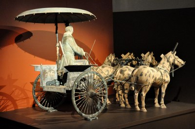

Solution for: Ancient Chinese Chariots
Answer Table
| 1. TRUE | 8. dish |
| 2. FALSE | 9. struts |
| 3. TRUE | 10. bronze |
| 4. NOT GIVEN | 11. Neck |
| 5. elm | 12. Sand |
| 6. oil | 13. Tomb complex |
| 7. 32 |
Exam Review


Ancient Chinese Chariots
A The Shang Dynasty or Yin Dynasty, according to traditional historiography, ruled in the Yellow River valley in the second millennium. Archaeological work at the Ruins of Yin (near modern-day Anyang), which has been identified as the last Shang capital, uncovered eleven major Yin royal tombs and the foundations of palaces and ritual sites, containing weapons of war and remains from both animal and human sacrifices.
B The Tomb of Fu Hao is an archaeological site at Yinxu, the ruins of the ancient Shang Dynasty capital Yin, within the modem city of Anyang in Henan Province, China. Discovered in 1976，it was identified as the final resting place of the queen and military general Fu Hao. The artifacts unearthed within the grave included jade objects, bone objects, bronze objects etc. These grave goods are confirmed by the oracle texts, which constitute almost all of the first hand written record we possess of the Shang Dynasty. Below the corpse was a small pit holding the remains of six sacrificial dogs and along the edge lay the skeletons of human slaves, evidence of human sacrifice.
|
Keywords in Questions |
Similar words in Passage |
|
Q1: the written records of the grave goods proved to be accurate. |
These grave goods are confirmed by the oracle texts, which constitute almost all of the first hand-written record we possess of the Shang Dynasty. |
|
Q2: Human skeletons in Anyang tomb were identified as soldiers who were killed in the war. |
the skeletons of human slaves, evidence of human sacrifice. |
|
Q1: Considering the details in the fourth sentence of the paragraph, it could be inferred that the question 1 is confirmed in the passage, so the answer is TRUE. |
|
|
Q2: According to the text, the human skeletons in Anyang tomb were of human slaves, not soldiers. So the answer is FALSE. |
|
C The Terracotta Army was discovered on 29 March 1974 to the east of Xian in Shaanxi. The terracotta soldiers were accidentally discovered when a group of local farmers was digging a well during a drought around 1.6 km (1 mile) east of the Qin Emperors tomb around at Mount Li (Lishan), a region riddled with underground springs and watercourses. Experts currently place the entire number of soldiers at 8,000 — with 130 chariots (130 cm long), 530 horses and 150 cavalry horses helping to ward of any dangers in the afterlife. In contrast, the burial of Tutank Hamun yielded six complete but dismantled chariots of unparalleled richness and sophistication. Each was designed for two people (90 cm long) and had its axle sawn through to enable it to be brought along the narrow corridor into the tomb.
|
Keywords in Questions |
Similar words in Passage |
|
Q3: The Terracotta Army was discovered by people lived nearby by chance. |
The Terracotta soldiers were accidentally discovered when a group of local farmers |
|
Q4: the size, the burial of Tutank Hamun, bigger, Qin Emperors tomb |
|
|
Q3: All the keywords in question 3 are paraphrased and can be found in the first half of the second sentence in paragraph C => the answer is TRUE. |
|
|
Q4: From paragraph C, sentences 3 to 5 mentions the number and size of the objects inside the two tombs, not the size of those tombs => The answer is NOT GIVEN. |
|
D Excavation of ancient Chinese chariots has confirmed the descriptions of them in the earliest texts. Wheels were constructed from a variety of woods: elm provided the hub, rose-wood the spokes and oak the felloes.
|
Keywords in Questions |
Similar words in Passage |
|
Q5: The hub is made of wood from the tree of ______ |
Wheels were constructed from a variety of woods: elm provided the hub |
|
NOTE: Paragraph D shows information of the structure of ancient Chinese chariots. Since question 5 to question 10 link to this information, you need to focus on paragraph D to find the answer for these questions. |
|
|
From the question, we can assume that the answer must be a Noun. + This sentence shows information of different kinds of wood used to make parts of the wheel. Just take a look at the second sentence: “Wheels were constructed from a variety of woods: elm provided the hub, … felloes”, this sentence contains all three keywords in the question => The answer must be somewhere in this sentence. + The word “provided” in the text is paraphrased as “is made of” in question 5. Since the answer must be ONE WORD, we choose elm as the correct answer of this question. |
|
The hub was drilled through to form an empty space into which the tampering axle was fitted，the whole being covered with leather to retain lubricating oil.
|
Keywords in Questions |
Similar words in Passage |
|
Q6: The room through the hub was to put tempering axle in which is wrapped up by leather aiming to retain _______ |
The hub was drilled through to form an empty space into which the tampering axle was fitted, the whole being covered with leather to retain lubricating oil. |
|
|
Though the number of spokes varied, a wheel by the fourth century BC usually had eighteen to thirty-two of them.
|
Keywords in Questions |
Similar words in Passage |
|
Q7: The number of spokes varied from 18 to ______ |
Though the number of spokes varied, a wheel by the fourth century BC usually had eighteen to thirty-two of them. |
|
|
Records show how elaborate was the testing of each completed wheel: flotation and weighing were regarded as the best measures of balance, but even the empty spaces in the assembly were checked with millet grains. One outstanding constructional asset of the ancient Chinese wheel was dishing. Dishing refers to the dishlike shape of an advanced wooden wheel, which looks rather like a flat cone.
|
Keywords in Questions |
Similar words in Passage |
|
Q8: The shape of wheel resembles a ______ |
Dishing refers to the dish-like shape of an advanced wooden wheel |
|
|
On occasion they chose to strengthen a dished wheel with a pair of struts running from rim to rim on each of the hub.
|
Keywords in Questions |
Similar words in Passage |
|
Q9: Two _______ was used to strengthen the wheel |
they chose to strengthen a dished wheel with a pair of struts |
|
|
As these extra supports were inserted separately into the felloes, they would have added even greater strength to the wheel. Leather wrapped up the edge of the wheel aimed to retain bronze.
|
Keywords in Questions |
Similar words in Passage |
|
Q10: Leather wrapped up the edge of the wheel aimed to remain _______ |
Leather wrapped up the edge of the wheel aimed to retain bronze. |
|
|
E Within a millennium, however, Chinese chariot-makers had developed a vehicle with shafts, the precursor of the true carriage or cart. This design did not make its appearance in Europe until the end of the Roman Empire. Because the shafts curved upwards, and the harness pressed against a horse’s shoulders, not his neck, the shaft chariot was incredibly efficient.
|
Keywords in Questions |
Similar words in Passage |
|
Q11: What body part of horse was released the pressure from to the shoulder? |
...the harness pressed against a horse’s shoulders, not his neck |
|
|
The halberd was also part of chariot standard weaponry. This halberd usually measured well over 3 metres in length, which meant that a chariot warrior wielding it sideways could strike down the charioteer in a passing chariot. The speed of chariot which was tested on the sand was quite fast. At speed these passes were very dangerous for the crews of both chariots.
|
Keywords in Questions |
Similar words in Passage |
|
Q12: What kind of road surface did the researchers measure the speed of the chariot on? |
The speed of chariot which was tested on the sand was quite fast. |
|
|
F The advantages offered by the new chariots were not entirely missed. They could see how there were literally the warring states, whose conflicts lasted down the Qin unification of China. Qin Shi Huang was buried in the most opulent tomb complex ever constructed in China, a sprawling, city-size collection of underground caverns containing everything the emperor would need for the afterlife. Even a collection of terracotta armies called Terra- Cotta Warriors was buried in it. The ancient Chinese, along with many cultures including ancient Egyptians, believed that items and even people buried with a person could be taken with him to the afterlife.
|
Keywords in Questions |
Similar words in Passage |
|
Q13: What part of his afterlife palace was the Emperor Qin Shi Huang buried in? |
Qin Shi Huang was buried in the most opulent tomb complex ever constructed in China |
|
|
-------------------------------------------
Great thanks to volunteer Hoàng Long Vương & Hạnh Hà has contributed these explanations and question markings.
If you want to make a better world like this, please contact us.
Questions 1-4
Do the following statements agree with the information given in Reading Passage?
In boxes 1-4 on you answer sheet, write
| TRUE | if the statement is true |
| FALSE | if the statement is false |
| NOT GIVEN | if the information is not given in the passage |
1 When discovered, the written records of the grave goods proved to be accurate.
Answer: TRUE Locate
2 Human skeletons in Anyang tomb were identified as soldiers who were killed in the war.
Answer: FALSE Locate
3 The Terracotta Army was discovered by people lived nearby by chance.
Answer: TRUE Locate
4 The size of the King Tutankhamen’s tomb is bigger than that of in Qin Emperors’ tomb.
Answer: NOT GIVEN
Questions 5-10
Complete the notes below.
Choose ONE WORD from the passage for each answer.
Write your answers in boxes 5-10 on your answer sheet.
5. The hub is made of wood from the tree of 5
Answer: elm Locate
6. The room through the hub was to put tempering axle in which is wrapped up by leather aiming to retain 6
Answer: oil Locate
7. The number of spokes varied from 18 to 7
Answer: 32 Locate.
8. The shape of wheel resembles a 8
Answer: dish Locate
9. Two was used to strengthen the wheel 9
Answer: struts Locate.
10. Leather wrapped up the edge of the wheel aimed to remain 10
Answer: bronze Locate.
Questions 11-13
Answer the questions below.
Choose NO MORE THAN THREE WORDS AND/OR A NUMBER from the passage for each answer.
11. What body part of horse was released the pressure from to the shoulder?
Answer: Neck Locate
12. what kind road surface did the researchers measure the speed of the chariot?
Answer: Sand Locate
13. What part of his afterlife palace was the Emperor Qin Shi Huang buried?
Answer: Tomb complex Locate
Other Tests
-
Total questions: 12
- 4- Multiple Choice
- 6- YES-NO-NOT GIVEN
- 2- Sentence Completion
-
Total questions: 12
- 3- Multiple Choice
- 5- Matching Information
- 4- Summary, form completion
-
Total questions: 14
- 6- Matching Headings
- 8- Summary, form completion
-
Total questions: 14
- 4- YES-NO-NOT GIVEN
- 5- Matching Information
- 5- Sentence Completion
-
Total questions: 15
- 5- TRUE-FALSE-NOT GIVEN
- 6- Matching Headings
- 4- Sentence Completion
-
Total questions: 13
- 6- YES-NO-NOT GIVEN
- 4- Matching Headings
- 3- Summary, form completion